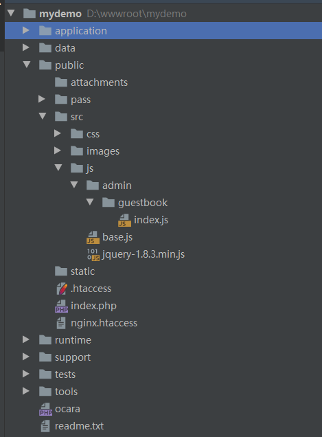

8.2.4 删除留言
上一节后台管理留言的列表页面中，每条留言右边都有一个删除的超链接，用于AJAX删除记录。
1、添加JS
（1）添加3个js文件。

（a）jquery-1.8.3.js为jquery框架文件
（b）base.js添加了一个ocUrl()函数，方便在JS中生成URL。
/*
* OneCore-Javascript新建URL
* @param integer url_type URL类型，对应配置文件中的设置
* @param string or array controller 控制器名称，如果有module,使用数组new Array(module名, controller名)
* @param string action 动作名称
* @param array param
*/
function ocUrl(url_type, controller, action, param){
var m = c = false;
var type = typeof controller;
if(type == 'object') {
m = controller[0];
c = controller[1];
} else if(type == 'string') {
c = controller;
}
if(url_type == 2 || url_type == 3){
var mstr = m ? m + '/' : '';
var str = url_type == '3' ? 'index.php/' : '';
url = '/' + str + mstr + c + '/' + action;
} else {
var mstr = m ? "m=" + m + "&" : '';
url = "/index.php?_route" + mstr + "/" + c + "/" + action;
}
if(typeof param == 'object') {
for(key in param) {
var val = param[key];
url = addQuery(url_type, key, val, url);
}
}
return url;
}
（c）在子目录的admin/guestbook下面添加了index.js，其中的deleteRecord()函数用于AJAX删除链接。
function deleteRecord(delId)
{
if (confirm('确定要删除吗？')) {
var url = ocUrl(2, new Array('admin', 'guestbook'), 'delete');
$.post(
url,
{id: delId},
function(data){
if (data.status == 200) {
alert('操作成功！');
location.reload();
} else {
alert('【'+data.data.code+'】' + data.message);
}
return false;
}
,'json');
}
}
（2）板中加载js
在布局文件admin.php中调用jquery-1.8.3.js和base.js文件，如下：
$this->load(array('jquery-1.8.3.min.js', 'base.js'));
在index动作的模板文件中调用index.js，如下：
$this->load(array('admin/guestbook/index.js'));
2、在删除链接添加调用函数
上节中已经加好了，看下代码：
<a href="javascript:;" onclick="deleteRecord(<?=$row['id']?>)">删除</a>
3、编写AJAX后台代码
在开发者中心，选择“普通模块（Module）”，添加名称为admin/guestbook/delete的动作，一般其中会自动添加api()方法。
class DeleteAction extends GuestbookController
{
/**
* 初始化
*/
public function __action(){}
public function api()
{
$id = $this->request->getPost('id');
$model = GuestbookModel::build()->select($id);
if (empty($ret)) {
$this->ajaxReturn('error', '找不到该记录！', '255');
} else {
$model->delete();
$this->ajaxReturn('success');
}
}
}